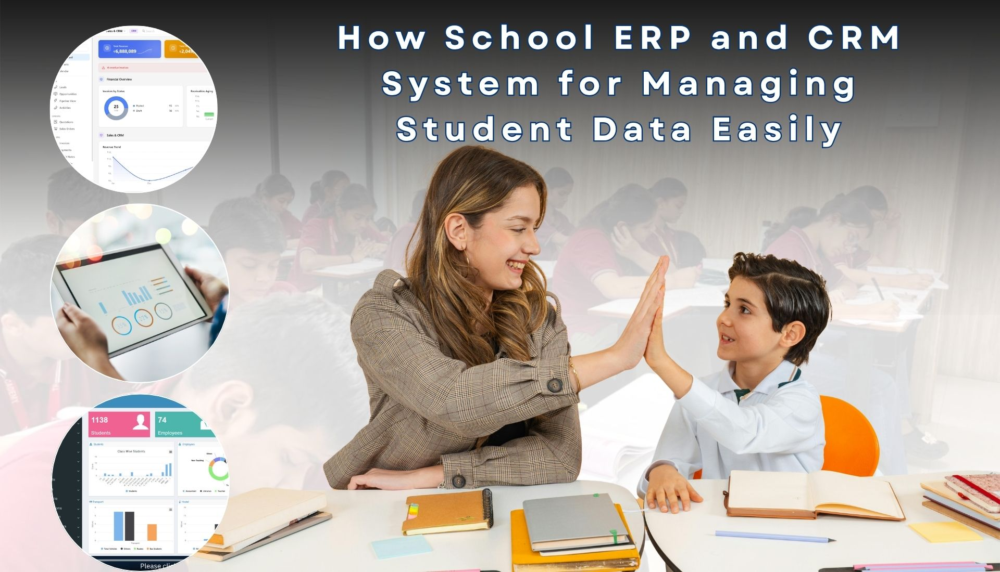

How School ERP and CRM System for Managing Student Data Easily
School ERP and CRM Software
School Admission Management Software with Marketing Automation
School Admission Management Software with Marketing Automation

Running a school or educational institution today is no longer limited to academics. As enrollment inquiries increase, operational complexity grows rapidly. It’s not just about admitting students it’s about managing inquiries, tracking follow-ups, handling documents, processing payments, and maintaining communication with parents.
Many schools struggle with:
➤ Inquiry leakage from websites, social media, and walk-ins.
➤ Manual data entry errors in Excel sheets
➤ Delayed follow-ups by admission counselors
➤ No clear visibility of the admission funnel
➤ Scattered student records across multiple systems
➤ Difficulty tracking application status and payments
➤ Poor coordination between marketing and admission teams
As the institution grows, so does the confusion. What once worked manually becomes inefficient, inaccurate, and unscalable.


Initially, many institutions managed inquiries using spreadsheets, manual registers, and disconnected software.
But as admissions increased, these systems became cluttered, inaccurate, and difficult to manage.The major problems included
At ThryvMax, we specialize in designing intelligent, scalable digital systems tailored specifically for educational institutions.
Our approach includes analyzing your entire admission journey
from inquiry capture to final enrollment — and building automation at every stage:
Solution’s Essential Elements:
1. A centralized dashboard to manage inquiries, applications, payments, and staff tasks.After implementation, institutions experience measurable improvements:
As manual errors decreased, operational efficiency rose.
➤ Reduced inquiry leakage through real-time lead capture
➤ Increased admission conversion rates
➤ Faster response time to parents and students
➤ Elimination of manual errors and duplicate data
➤ Complete visibility into the admission funnel
➤ Easy financial tracking and transaction history access
➤ Smart reminders for follow-ups, document submissions, and fee deadlines
➤ Improved staff productivity and accountability
➤ Better coordination between marketing and admission teams
➤ Scalable system ready for multi-campus expansion.
Their team can now concentrate on innovation rather than administration because what used to require hours of manual updates now occurs automatically.
.
A Digital Transformation That Builds the Foundation for Scalable Growth The transformation of school admissions through CRM and marketing automation proves one simple principle:
When technology and educational strategy align, growth doesn’t just become possible — it becomes sustainable.
By implementing a customized School CRM system with marketing automation, institutions gain:
⦿ Operational clarity
⦿ Centralized data management
⦿ Automated communication
⦿ Enhanced parent experience
⦿ Data-driven decision-making
⦿ Scalable infrastructure for future growth